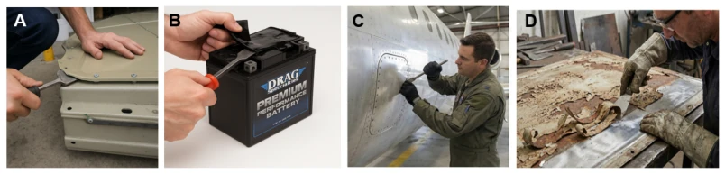
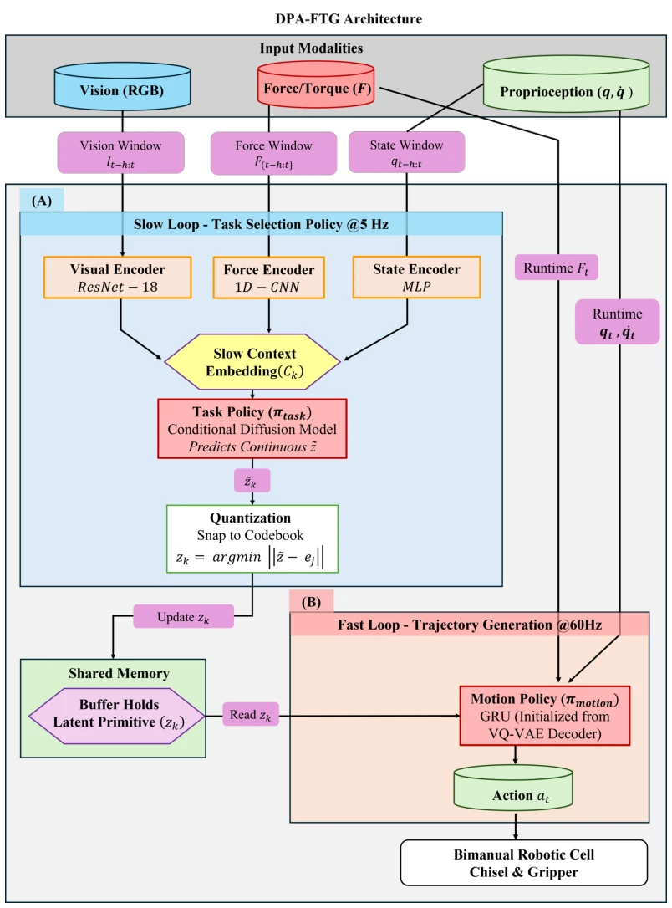
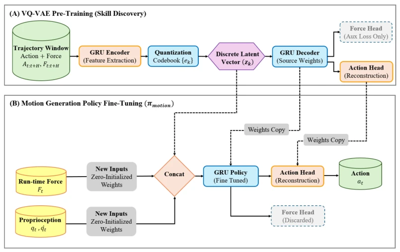
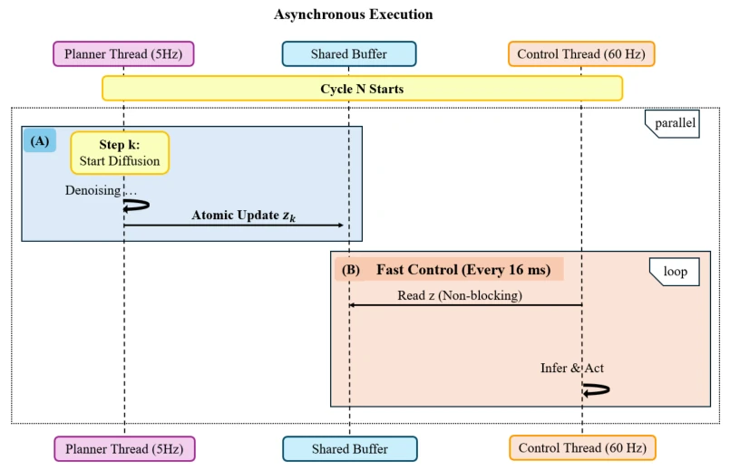
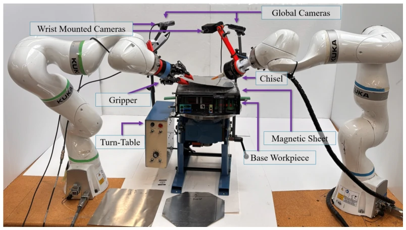
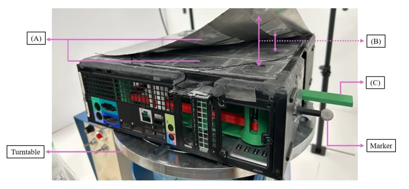
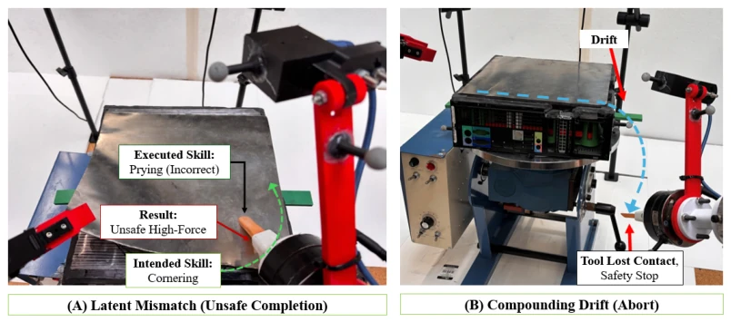
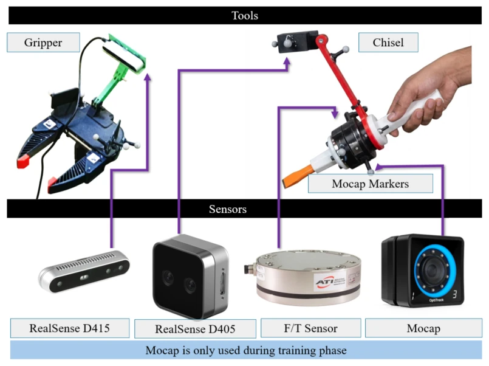
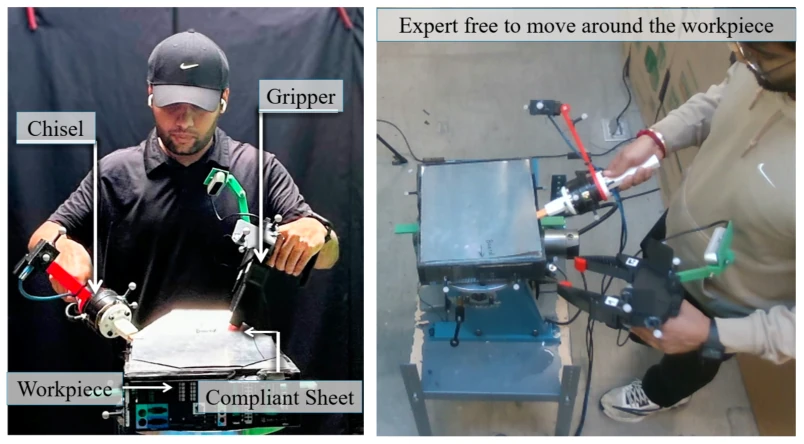
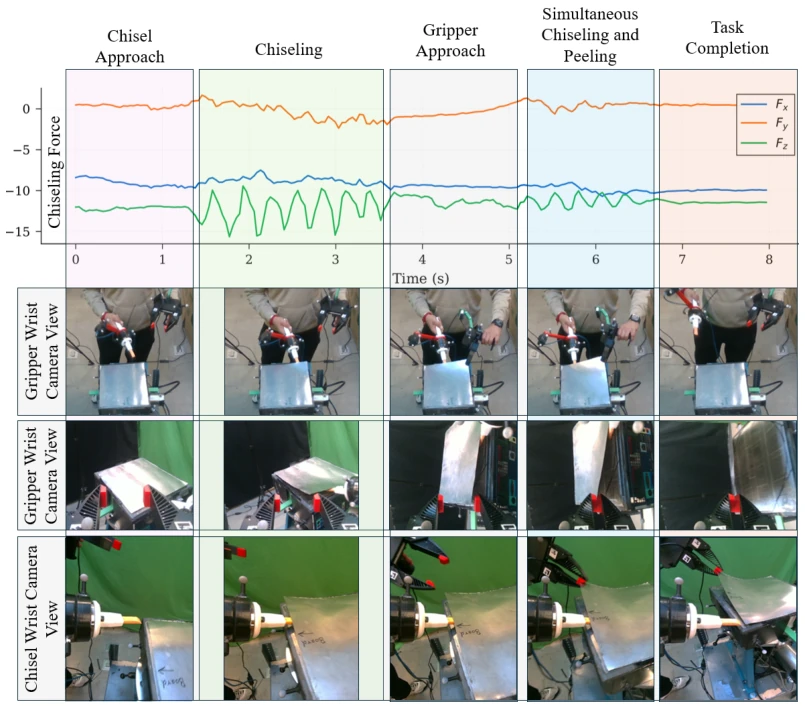

This paper attempts to use a hierarchical architecture to solve the 'sluggishness' problem of diffusion policies in contact tasks. Although DPA-FTG performs well on high-dynamic force control tasks like battery disassembly, essentially it is still 'changing the soup but not the medicine'—turning action chunking into latent space chunking. The biggest drawback is that training relies on MoCap to capture expert data, while deployment uses only onboard sensors; this setting of 'cheating during training, running naked during deployment' has extremely high implementation costs in actual industrial scenarios. Additionally, the physical characteristics of magnetic suction simulation for adhesion are overly simplified, potentially masking the complex dynamics of real adhesive failure. However, the idea of decoupling the high-level planning of diffusion models from 60Hz force control indeed hits the pain point of current Diffusion Policy in contact tasks of 'thinking too much, acting too slow', having reference value for disassembly tasks requiring high-frequency force feedback. Although latent space discretization prevents mode averaging, it also limits the strategy's continuous fine-tuning capability.
Existing diffusion policies (e.g., [6]) are good at handling multi-modal behaviors, but face fatal defects in contact-rich tasks: iterative denoising causes inference latency, making it difficult to support high-frequency force control above 60Hz. Although Action Chunking technology mitigates latency, it adopts an open-loop execution window; once encountering sudden breaks or force transients, the system is like 'blind men touching an elephant' [10]. Although RDP [10] introduces a slow-fast architecture, it mainly focuses on position correction and does not explicitly model the dynamic force adjustment required for chiseling. Material separation tasks (such as battery disassembly) require precise oscillating forces to break adhesives, where millimeter-level position errors can lead to workpiece damage. Therefore, there is an urgent need for an architecture that can decouple task intent selection and high-frequency force feedback regulation to avoid hardware damage risks brought by open-loop execution. Current methods in stiff contact scenarios, where environment dynamics evolve faster than the execution window, lead to tool damage.

Figure 1: Material separation tasks require complex force modulation across diverse domains. (A) Separating compliant busbars in EV battery remanufacturing. (B) Manual prying of bonded compo- nents. (C) Removing sealant or panels in aerospace maintenance. (D) Scraping corrosion or fused layers in general salvage operations. While visually distinct, these tasks share a common dynamic profile: high-frequency force application coupled with low-frequency trajectory planning.
DPA-FTG adopts a hierarchical architecture, decomposing the problem into task selection (high-level) and trajectory generation (low-level). The high-level (5Hz) uses a conditional diffusion model to predict discrete latent primitives (Latent Primitive), which are quantized and learned from expert trajectories via VQ-VAE, ensuring the strategy does not exhibit mode averaging. The low-level (60Hz) adopts a GRU as a force response decoder, receiving high-level intent and real-time force/proprioception data. Innovations lie in: 1) Moving the 'chunking' concept from action space to latent space, where intent is stable and execution is flexible; 2) The low-level strategy inherits VQ-VAE decoder weights through zero-initialization fine-tuning, retaining kinematic structure while introducing force feedback, ensuring stable initial behavior; 3) Asynchronous thread deployment, where the control thread is not blocked by diffusion inference latency, achieving continuous 60Hz response. This design allows the system to maintain high-level semantic planning while having millisecond-level force control response at the bottom.

Figure 2: System Architecture of DPA-FTG. The framework decouples high-level task planning from low-level reactive control. (A) Slow Loop (5 Hz): The Task Selection Policy (πtask) takes a history of multi-modal observations (Vision, Force, Proprioception) to predict a continuous latent embedding ˜z. This embedding is quantized to the nearest codebook vector zk and published to an atomic buffer. (B) Fast Loop (60 Hz): The Motion Generation Policy (πmotion), running on a separate thread, reads the latest skill zk. It combines this semantic intent with instantaneous force and proprioceptive feedback to generate high-frequency velocity commands (at). The fast loop operates independently of the planner’s latency, ensuring continuous 60 Hz reactivity.

Figure 3: Architecture for Latent Learning and Policy Transfer. (A) Skill Discovery (VQ-VAE): During pre-training, the encoder compresses expert trajectories (Action + Force) into a discrete latent code zq. The decoder is trained to reconstruct the action profile ˆa, with an auxiliary head reconstructing the force profile ˆf to ensure the latent captures dynamic context. (B) Policy Fine- Tuning: The low-level controller (πmotion) is initialized by transferring weights from the pre-trained VQ-VAE decoder (blue arrows). To enable reactivity, a new input layer is grafted onto the network to accept real-time sensor data (Ft, qt). These new weights are zero-initialized to preserve the pre- trained kinematic behavior at the start of fine-tuning. The auxiliary force head is discarded, and the pol

Figure 4: Asynchronous Inference Timing. The system enables high-frequency control despite the computational latency of the diffusion planner. (A) Planner Thread: The diffusion process takes ≈200 ms to denoise and predict the next target skill zk. (B) Control Thread: Executing at 60 Hz (16 ms/tick), the controller reads the current target from the shared buffer in a non-blocking manner. This allows the robot to react to contact dynamics continuously without pausing for the planner.
Experiments were conducted on a dual-arm KUKA iiwa platform, using magnetic suction to simulate battery pack adhesion as a substitute workpiece. The dataset was collected via a MoCap system for expert demonstrations, using only onboard sensors during deployment. Baselines include standard Diffusion Policy and RDP [10]. Evaluation metrics are task success rate and execution speed. Results show DPA-FTG outperforms baselines in compliant sheet separation tasks, especially being more stable when handling force transients. Ablation experiments show that the low-level strategy introducing force feedback significantly improved safety. Additionally, the model achieved zero-shot generalization on unseen geometries (hexagon, triangle), proving the effectiveness of the latent space. However, magnetic suction simulation may underestimate the complexity of real adhesion, and the distribution difference between MoCap data and onboard sensors may affect generalization.

Figure 5: The bimanual robotic cell used for experimental validation. The left arm is equipped with a chisel and a force sensor to perform high-frequency oscillatory motions. The right arm is equipped with a gripper for peeling the separated sheet. The workpiece is mounted on a turntable to allow access to all sides.

Figure 6: Surrogate Workpiece Design and Magnetic Adhesion Mechanism. The custom fixture models a battery module with a compliant aluminum cover. (A) Adhesion is provided by an array of 16 neodymium magnets. (B) Upon separation, magnets retract to simulate bond fracture. (C) A lever mechanism allows for rapid, repeatable re-engagement of magnets for subsequent trials.

Figure 11: Failure Mode Analysis. Illustration of two distinct failure modes during the task. (A) Latent Mismatch (Unsafe Completion): The system executes an incorrect skill, Prying, instead of the intended Cornering sequence. This results in an Unsafe High-Force pry action on the workpiece. (B) Compounding Drift (Abort): The tool drifts away from the intended trajectory (blue dashed line), causing it to lose contact with the surface. This deviation triggers a Safety Stop.
其他图片Other Figures

Figure 7: Tools and Sensors. (Top) Close-up views of the custom-designed gripper and chisel. The gripper is based on the UMI-Gripper design [7]. (Bottom) The sensor suite comprises of two global RealSense D415 depth camera, an in-hand RealSense D405 depth camera, and an ATI Force sensor integrated with the chisel. Both tools are attached with retroreflective markers for MoCap. Note that the MoCap system is used exclusively during the training phase to acquire ground-truth trajectory data. During deployment, policy relies solely robot’s onboard sensors for proprioception.

Figure 8: Expert Demonstration Setup. A human operator performs the bimanual compliant sheet separation task on a surrogate workpiece. This data collection method allows for the capture of natural manipulation dynamics, specifically the high-frequency oscillatory primitives required to break adhesive bonds, which are difficult to reproduce via teleoperation.

Figure 10: A detailed breakdown of a human expert demonstration for the bimanual compliant sheet separation task, segmented into five distinct phases. The top panel displays the force profiles (Fx, Fy, Fz) measured at the chisel tool, highlighting the characteristic high-frequency oscillatory dynamics required during the "Chiseling" and "Simultaneous Chiseling and Peeling" phases to sep- arate the sheet. The lower panels provide corresponding visual snapshots for each phase across three synchronized perspectives.